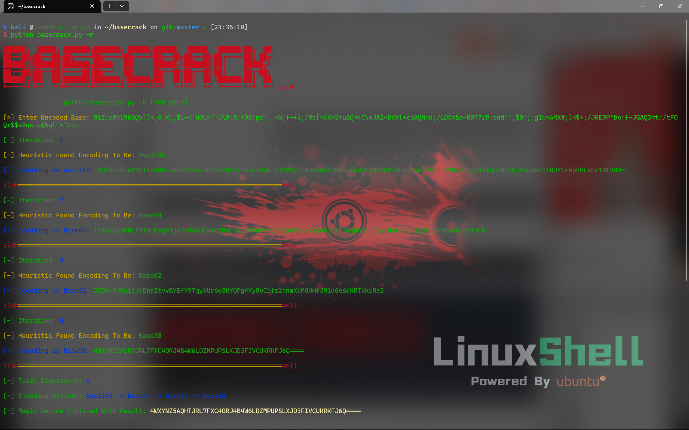
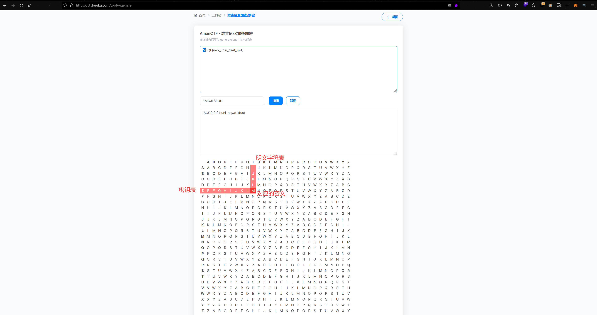
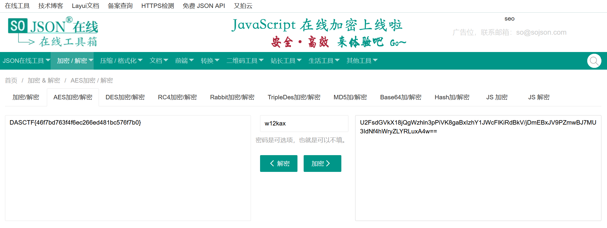
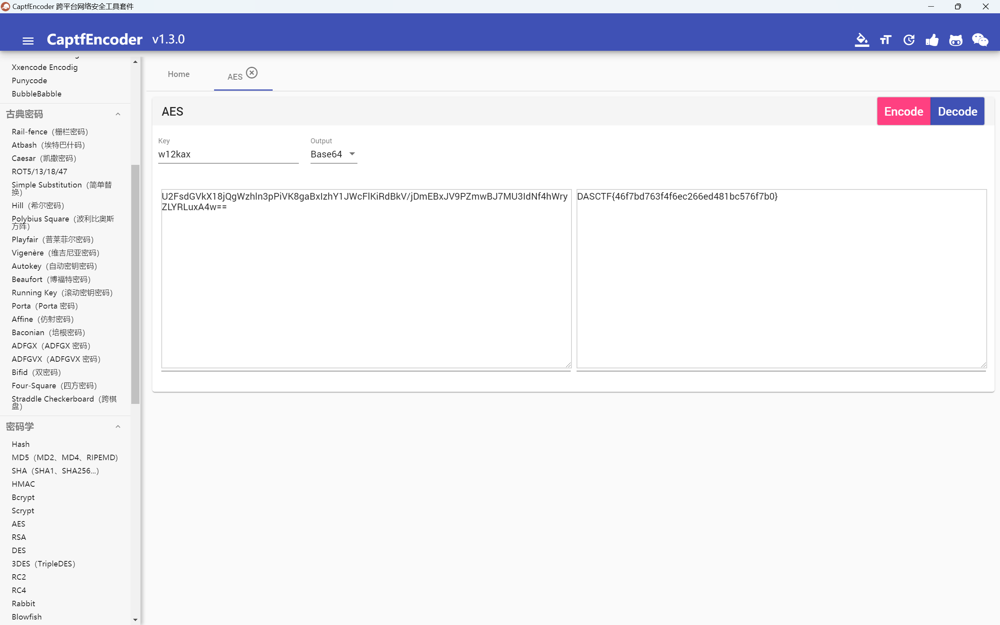
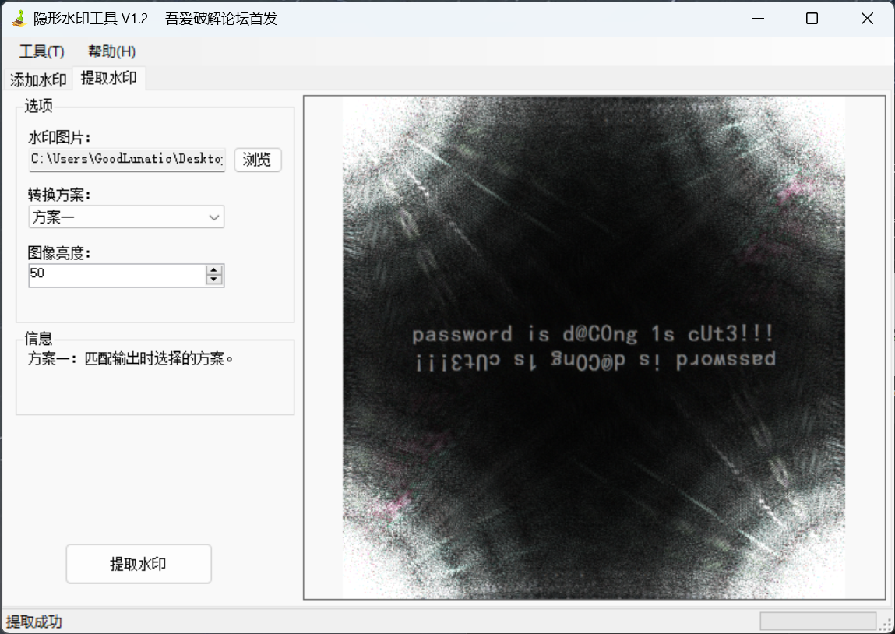
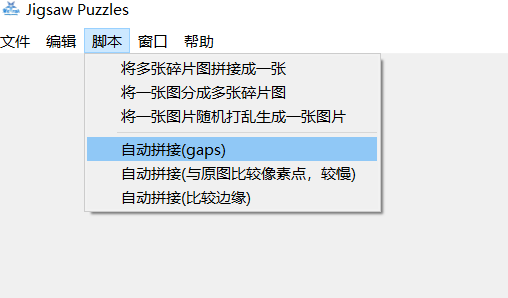
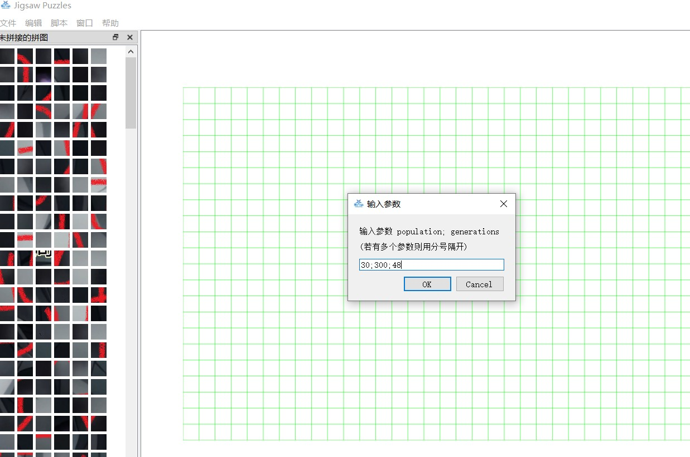
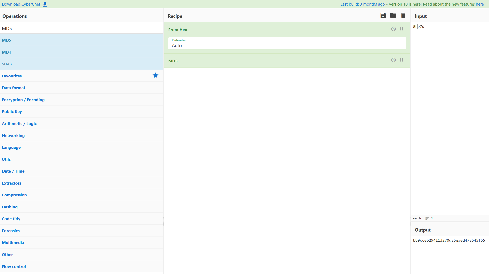
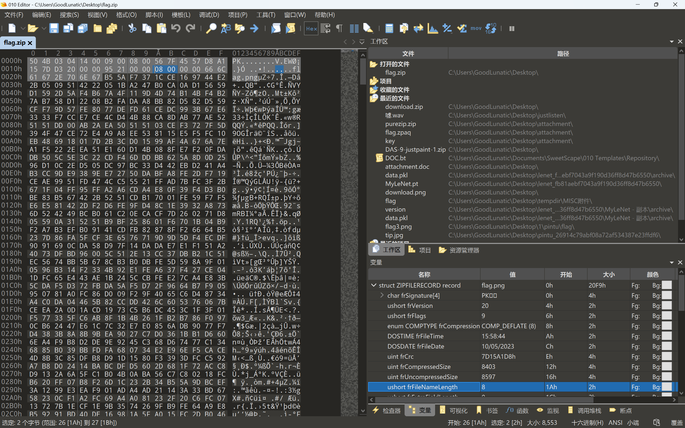

CTF-Misc Guide
 Lunatic
LunaticThis is a simple Guide for CTF in Misc Area.
最开始接触CTF时，学的最多的就是Misc，各种编码各种加密还有各种软件的使用…
但无奈MIsc涉及的范围实在太广了，于是就萌生了一边学习一边记录的想法，甚至还想为此写一本指南。
一些奇奇怪怪的经历：
1、一段字符串，用base64异或脚本跑，找正常的字符串
2、rockstar 编程语言，在github上面可以找到，然后在本地用pip安装库，把rock文件转换为py文件，运行即可得到flag
3、给你一个.exe安装包文件，flag藏在安装之前的一大串协议中
4、实在做不出来的时候，可以把flag的格式转其他的编码和题目中的信息比对找规律
5、给你一个gpx文件，在线网站https://www.gpsvisualizer.com/map_input解密，然后地名的首字母连起来就是flag
CTF中的常用关键词
|
|
|
|
各种加密/编码：
base家族
详细请看：https://www.cnblogs.com/0yst3r-2046/p/11962942.html
|
|
base64还可以换表(表中的字符要求不重复)编码，例如
|
|
Tips：base64可以与其他文件格式互相转换（比如图片[会有很多行的base64]），使用在线网站或者随波逐流转换即可 如果出现了很多层乱七八糟的base编码，连CyberChef都识别不出来的话，可以试试用BaseCrack这个开源工具 输入 python basecrack.py -m 运行即可

base64隐写：
可以使用以下脚本解密
|
|
|
|
或者直接使用PuzzleSolver解密

这里要注意多行base64编码可能会出现需要我们自己补全=的情况（例题-攻防世界 MISC - tunnel）
可以使用下面的脚本补全，也可以直接用上面那个工具补全
|
|
MD5加密
|
|
MD5 加密后的密文应该是 纯数字+纯字符
有些 MD5 的 HASH 值可以直接在 somd5 或者 cmd5 上查
python中str类型和byte类型：
|
|
emoji-aes加密：
密文由一大串emoji表情组成，解密需要密钥，例如
已知key：th1sisKey，直接使用在线网站解密即可，在线网站源码也可以下载到本地
|
|
https://aghorler.github.io/emoji-aes/
词频分析：
一堆文字，看着什么编码都不像的，可能是词频分析，用在线网站跑https://quipqiup.com/
字频分析：
用随波逐流直接分析
摩斯电码：
|
|
|
|
vigenere(维吉尼亚)密码：
1.给了密文和Key
直接拉到cyberchef中解密即可
2.给了密文，没给密钥，但是知道目标明文的格式
先用B神的脚本爆破出Key，然后再把这个Key放到cyberchef中解密
3.根据对照表，手搓密钥的前几位

4.Python代码解密/爆破维吉尼亚加密
|
|
希尔密码：
解密网站:http://www.metools.info/code/hillcipher243.html
已知密文和密钥，并且密钥(key)是一个网址，如http://www.verymuch.net
已知密文和密钥，并且密钥是四个数字
|
|
Rabbi密码：
已知密文和密钥，密文有点像base64编码的(可能有+号)
云隐密码：
特征是：密文只由01248组成
用随波逐流或者CTFD中的脚本直接跑
曼彻斯特与差分曼彻斯特编码:

- 曼彻斯特码：从高到低表示 1，从低到高表示 0
- 差分曼彻斯特码：在每个时钟周期的起始处（虚线处）有跳变表示 0；无跳变则表示1。
可以直接使用 曼彻斯特编码 转换工具转换

例题1 2016CISCN-传感器1
5555555595555A65556AA696AA6666666955
这是某压力传感器无线数据包解调后但未解码的报文(hex)
已知其ID为0xFED31F，请继续将报文完整解码，提交hex。
提示1：曼联
|
|
例题2 2016CISCN-传感器2
现有某ID为0xFED31F的压力传感器，已知测得
压力为45psi时的未解码报文为：5555555595555A65556A5A96AA666666A955
压力为30psi时的未解码报文为：5555555595555A65556A9AA6AA6666665665
请给出ID为0xFEB757的传感器在压力为25psi时的解码后报文
和上面那题的思路一样，就是最后多了一步压力位算法和校验位算法猜测
压力位算法：压力每增加5psi压力值增加11
校验位算法：校验值为从ID开始每字节相加的和模256的十六进制值即为校验值
例题3 2017CISCN-传感器1
已知ID为0x8893CA58的温度传感器的未解码报文为：3EAAAAA56A69AA55A95995A569AA95565556
此时有另一个相同型号的传感器，其未解码报文为：3EAAAAA56A69AA556A965A5999596AA95656
请解出其ID，提交flag{不含0x的hex值}
开头的3E提示了差分曼彻斯特编码，就是根据上图中的跳变位置解码
|
|
例题4 2017CISCN-传感器2
已知ID为0x8893CA58的温度传感器未解码报文为：3EAAAAA56A69AA55A95995A569AA95565556
为伪造该类型传感器的报文ID（其他报文内容不变），请给出ID为0xDEADBEEF的传感器1的报文校验位（解码后hex）以及ID为0xBAADA555的传感器2的报文校验位（解码后hex），并组合作为flag提交。
例如，若传感器1的校验位为0x123456，传感器2的校验位为0xABCDEF，则flag为flag{123456ABCDEF}。
解码步骤和上题一样，就是多考察了一个校验位算法（CRC8）
在最后的结果前面补一个0，然后再计算 CRC8 即可
社会主义核心价值观密码：
解密网址：http://www.hiencode.com/cvencode.html
公正民主公正文明公正和谐：abc
outguess解密图片：
在kali中下载outguess：outguess -k ‘abc’ -r mmm.jpg -t flag.txt
outguess -k ‘key’ -r 加密后的图片.jpg -t 明文.txt
盲文：
使用https://www.qqxiuzi.cn/bianma/wenbenjiami.php?s=mangwen在线翻译
文本加密为音乐符号：
Tips：这里要注意，加密的密文一定是以=结尾的，有时候需要自己把=加上
eg：♭♯♪‖¶♬♭♭♪♭‖‖♭♭♬‖♫♪‖♩♬‖♬♬♭♭♫‖♩♫‖♬♪♭♭♭‖¶∮‖‖‖‖♩♬‖♬♪‖♩♫♭♭♭♭♭§‖♩♩♭♭♫♭♭♭‖♬♭‖¶§♭♭♯‖♫∮‖♬¶‖¶∮‖♬♫‖♫♬‖♫♫§=
直接用在线网站解密：https://www.qqxiuzi.cn/bianma/wenbenjiami.php?s=yinyue
敲击码：

….. ../… ./… ./… ../ 5,2 3,1 3,1 3,2 W L L M
Polybius密码(详见CTFwiki)
类似于11，22，11，24这样的
去逗号改成空格，拉入随波逐流直接解密
DES加密算法
例子：
|
|

AES加密算法
在线网站解密：
AES-ECB(不需要IV)
CyberChef解密AES-ECB时需要将IV设置为\x00\x00\x00\x00\x00\x00\x00\x00\x00\x00\x00\x00\x00\x00\x00\x00
如果 key 不足16字节可以尝试在后面补0
AES-CBC(需要填写IV)
Tips: CBC模式下key的长度必须是16bytes的整数倍，但是IV不一定

密钥不足16字节时需要padding补齐16字节
可以使用能自动补齐的在线网站解密 https://www.sojson.com/encrypt_aes.html

可以将密文和key拉入CaptfEncoder-win-x64-1.3.0解密

使用openssl进行加解密
|
|
埃特巴什码(Atbash)
类似于：(+w)v&LdG_FhgKhdFfhgahJfKcgcKdc_eeIJ_gFN
拉入厨子直接解密
|
|
DNA编码
|
|
1、使用CTFD中的DNAcode脚本解密
https://github.com/omemishra/DNA-Genetic-Python-Scripts-CTF
2、网上找的脚本（红明谷杯2023——hacker）
|
|
3、使用在线网站解密（例题-BUGKU-粉色的猫）
DNA编码在线解密：https://earthsciweb.org/js/bio/dna-writer/

金笛短信PDU编码
直接使用在线网站解码：http://www.sendsms.cn/pdu/ （特别注意：需要一行一行地解码）
形如下面这串数字
|
|
一行一行解码后可以得到

|
|
例题-BUGKU-粉色的猫
Text Encoding Brute Force
如果赛博厨子转完两次Hex后依然是乱码，可以用Text Encoding Brute Force爆破试试看
例子：红明谷杯2023——阿尼亚
Decabit编码
正常的 Decabit编码 是十个字符一组的，如果不是十个一组，就很可能不是 Decabit编码
+-+-++–+- ++—+-++- -+–++-++- +–++-++– –+++++— ++-++—+- +++-+-+— +-+-+—++ —+++-++- -+–++-++- -+–+++-+- -+–++-++- -+–++-++- ++-+-+-+– -+–+++-+- ++-++—+- -++++—+- -+–++-++- ++-+-+-+– +-+++—+- +++-++—- —+++-++- +-+-+—++ ++-+-+-+– +-+-+–++- ++–+–++- -++++—+- +—+++-+- ++-+-+-+– -++++—+- -+–+++-+- +–+-+-++- +++-+-+— +-+++—+- -+–+-+++- -+–++-++- —+++-++- ++++—-+- -++++—+- -+–+++-+- -+–++-++- —-+++++-
直接使用 在线网站 解密即可
如果不是Decabit编码，可以试试看把+-分别用01替换 [2023 楚慧杯-Easy_zip]
仿射密码
有两个key，key-a为必须是(1,3,5,7,9,11,15,17,19,21,23,25)中的一个,key-b是0~25的数字
可以使用在线网站CTF在线工具-在线仿射密码加密|在线仿射密码解密|仿射密码算法|Affine Cipher (hiencode.com)或者随波逐流解密
|
|
BrainFuck编码
可以直接使用在线网站解码，但是flag可能会藏在内存中然后被删去导致无法输出flag，因此可以用下面这个代码输出之前放在内存中的flag
|
|
Gronsfeld密码
可以直接使用这个在线网站解密&爆破：https://www.boxentriq.com/code-breaking/gronsfeld-cipher
|
|
UUencode编码
看起来有点像base85，直接使用在线网站解密即可
|
|
AAencode编码
XXencode编码
随波逐流直接解密即可 [2023 浙江省赛决赛]
无字天书(whitespace)或者snow隐写
一个文件打开都是空白字符
可以使用在线网站解密：https://vii5ard.github.io/whitespace/ 复制进去直接run即可
snow隐写，到snowdos32工具目录下运行 SNOW.EXE -C -p password flag.txt 命令即可
零宽字符隐写
这个建议直接用B神的 PuzzleSolver 一把梭了
中文电报（中文电码）
类似于下面这种四位数一组的编码，直接在线网站解码即可
5337 5337 2448 2448 0001 2448 0001 2161 1721 1869 6671 0008 3296 4430 0001 3945 0260 3945 1869 4574 5337 0344 2448 0037 5337 5337 0260 0668 5337 6671 0008 3296 1869 6671 0008 3296 1869 2161 1721
Quote-Printable编码
类似于下面这样的编码，直接使用 在线网站 解密即可
flag{ichunqiu_=E6=8A=80=E6=9C=AF=E6=9C=89=E6=B8=A9=E5=BA=A6}
flag{ichunqiu_技术有温度}
Unicode编码
这个编码有很多种格式，比如+U、\u、\x、&#啥的

可以使用这个在线网站解码：https://r12a.github.io/app-conversion/
中文ascii码
|
|
加上&#和分号，直接 CyberChef 或者 在线网站 解密即可
|
|
培根密码
由 a、b 或者 A、B 或者 0、1 组成的密文，密文中只有两种字符，可以直接使用 随波逐流 解密
Tips：CyberChef 的培根密码解密可能会有点问题，这里建议用随波逐流解密
锟斤拷
这个东西的成因是 Unicode 的替换字符（Replacement Character，�）于 UTF-8 编码下的结果 EF BF BD 重复，在 GBK 编码中被解释为汉字 “锟斤拷”（EF BF BD EF BF BD）
|
|
键盘坐标密码
|
|
例题-i春秋-misc3
|
|
手机九宫格键盘密码
参考链接：https://blog.csdn.net/qq_55011640/article/details/123626280
下面举个栗子就理解了： 82 73 42 31 22 31 33 41 32 U R H D B D F G E
不同键盘布局的编码
Qwerty

Qwertz

Azerty

Dvorak(德沃夏克键盘)


Colemak

例题-2023台州市赛初赛 Black Mamba
棋盘密码((ADFGVX,ADFGX,Polybius)

直接使用CaptfEncoder或者随波逐流等工具输入密文和密钥解密即可

ADFGVX密码 默认棋盘：ph0qg64mea1yl2nofdxkr3cvs5zw7bj9uti8 默认密钥：german ADFGX密码 默认棋盘：phqgmeaynofdxkrcvszwbutil 默认密钥：german 波利比奥斯方阵密码 密钥：随机 默认密文字符：ABCDE
福尔摩斯密码
|
|
直接网上查找福尔摩斯密码对照表即可 flag{RRRRRRE}
利用编程代码画图
- LOGO编程语言【例题-[RCTF2019]draw 】 在线编译器：https://www.calormen.com/jslogo/
- CFRS编程语言【例题-2024宁波市赛初赛 Misc2】 在线画图网站：https://susam.net/cfrs.html
通过拼音和声调进行编码
例题-惠州学院红帽协会CTF招新赛-Crypto-xuanxue
|
|
|
|
当铺密码
当铺密码就是一种将中文和数字进行转化的密码：
当前汉字有多少笔画出头，就是转化成数字几
|
|
简/繁体汉字笔画编码
|
|
PGP词汇表加密
密文格式大致如下:
例题1
endow gremlin indulge bison flatfoot fallout goldfish bison hockey fracture fracture bison goggles jawbone bison flatfoot gremlin glucose glucose fracture flatfoot indoors gazelle gremlin goldfish bison guidance indulge keyboard keyboard glucose fracture hockey bison gazelle goldfish bison cement frighten gazelle goldfish indoors buzzard highchair fallout highchair bison fallout goldfish flytrap bison fallout goldfish gremlin indoors frighten fracture highchair bison cement fracture goldfish flatfoot gremlin flytrap fracture buzzard guidance goldfish freedom buzzard allow crowfoot jawbone bison indoors frighten fracture bison involve fallout jawbone Burbank indoors frighten fracture bison guidance gazelle flatfoot indoors indulge highchair fracture bison hockey frighten gremlin indulge flytrap bison flagpole fracture bison indulge hockey fracture flytrap bison allow blockade endow indulge hockey fallout blockade bison gazelle hockey bison inverse fracture highchair jawbone bison gazelle goggles guidance gremlin highchair indoors fallout goldfish indoors bison gazelle goldfish bison indoors frighten gazelle hockey bison flatfoot frighten fallout glucose glucose fracture goldfish freedom fracture blackjack blackjack
例题2-2024国城杯-Tr4ffIc_w1th_Ste90
I randomly found a word list to encrypt the flag. I only remember that Wikipedia said this word list is similar to the NATO phonetic alphabet.
crumpled chairlift freedom chisel island dashboard crucial kickoff crucial chairlift drifter classroom highchair cranky clamshell edict drainage fallout clamshell chatter chairlift goldfish chopper eyetooth endow chairlift edict eyetooth deadbolt fallout egghead chisel eyetooth cranky crucial deadbolt chatter chisel egghead chisel crumpled eyetooth clamshell deadbolt chatter chopper eyetooth classroom chairlift fallout drainage klaxon
解密脚本：
|
|
各种文件头/尾：
这里要注意，出题人可能会把文件头的小写字母偷偷改成大写，例如：Rar -> RAR
|
|
Misc——流量分析
详见作者博客中的 Network Traffic Analysis 这篇文章
MIsc——图片题思路：
Tips：
1.各种隐写可以先拉入一键梭哈网站解析一下:https://aperisolve.fr/
2.各种乱七八糟的隐写可以先看看这个UP主的视频：https://space.bilibili.com/39665558
通用思路
1、查看图片属性的详细信息(可能关键信息就在里面)
2、拉入010，查看文件头尾，可能会有不同类型文件文件头混用
3、foremost 或者 binwalk
如果 foremost 没有提取出东西，可以用 binwalk 试一下，可能 binwalk可以提取出东西
例题 - i春秋 CTF Misc class10
4、盲水印隐写(可能是一张图片或者两张图片)
一张图片的情况
可以使用 隐形水印工具V1.2 或者 WaterMark 来提取水印

两张图片的情况
|
|
5、图片的分离和拼接
(1)可以用kali的convert分离和montage拼接命令
|
|
(2)使用在线网站分解：https://tu.sioe.cn/gj/fenjie/
(3)用py脚本跑
|
|
6、像素点合成
注：Linux wc命令用于计算字数。
-l或–lines 显示行数。
-w或–words 只显示字数。
-c或–bytes或–chars 只显示Bytes数。
可以改个标题后用在线网站将txt转换为ppm文件
7、Image conbiner(两张图片)
两张图片可能有部分残缺（可以互补）
给了两张图片时，用Stegsolve.jar，打开其中一张，
然后再Analyze-Image conbiner打开另一张图片
还有可能是给了两张二维码，需要两个二维码每个像素亦或，直接用CTFD中的像素亦或脚本即可
8、OurSecret隐写
拉入OurSecret，输入密码解密，得到隐藏文件
9、拼图题
碎图片合成一张图片
|
|
|
|
然后把上面合成好的图片使用 Puzzle-Merak 工具进行智能拼图


这里只需要输入 generation、population、size 并用分号分开即可开始自动拼图
也可以使用gaps智能拼图(在kali和wsl里使用都可以)
|
|
|
|
10、提取图中等距像素点/近邻法缩放图片
参考链接：
https://www.bilibili.com/video/BV1Lf4y1r7dZ/?spm_id_from=333.999.0.0
例题-2024浙江省赛决赛-天命人
拿下面这张图片举个栗子

方法一：直接在PS中将宽高都缩小为原来的十分之一，并选择邻近硬边缘即可直接得到隐藏的图片

方法二：在windows的终端中运行CTFD中的Get_Pixels.py（注意所有路径中都不要出现中文）
|
|
这里有时候运行会报错，需要把main.py脚本拉到桌面上运行或者检查一下图片的CRC对不对
一样可以得到隐藏的图片

11、pixeljihad（有密码）
直接使用在线网站解密即可：PixelJihad (sekao.net)
12、隐写文本可能藏在原图片和隐写文件的中间
直接在010中搜索IEND，然后查看后面有没有额外内容即可
13、silenteye隐写
特征：放大图像后会有行列不对齐的小灰块
直接用 silenteye 打开输入密钥decode即可，默认密钥是 silenteye
14、图片报错改宽高后图片无变化，可以再 foremost 一下
15、DeEgger Embedder隐写
可以直接使用 DeEgger Embedder 工具 extract files
16、flag可能藏在 exif 中
直接在 WSL 中输入以下命令查看即可，如果偷懒也可以直接使用 破空 flag 查找工具 进行查找
|
|
17、给了两张图片，flag藏在每行不同像素的个数中
例题1-2023羊城杯初赛-两支老虎
|
|
18、两张图片，用StegSolve中的Image Conbiner合成为一张bmp

合成一张bmp后，再使用zsteg扫描

19、图片多个通道存在LSB隐写，StegSolve中把背景颜色相同的勾选上
20、把小说藏进图片
参考链接：https://www.bilibili.com/video/BV1Ai4y1V7rg/?spm_id_from=333.999.0.0&vd_source=31399c09aa0c93655468bde7b13fcc03
|
|
|
|
21、Arnold猫脸变换
参考链接：https://1cepeak.cn/post/arnold/
解密需要提供a和b，然后直接使用下面这个脚本恢复即可
|
|
PNG思路
1、CRC错误(不能乱改)，改宽高，17~20是宽，21~24是高(可用Pictools脚本快速爆破)
2、LSB(最低有效位)隐写:
没有密钥的情况
|
|
信息藏在图片中有时候会看不出来，所以还是要用stegsolve.jar过一遍
有密钥的情况（cloacked-pixel）
lsb隐写的可能是加密后的数据，i春秋最喜欢的cloacked-pixel
拉到kali/WSL里用cloacked-pixel命令解密出数据
|
|
0.png是隐写后的图片；out.data是隐写内容保存的位置；f78dcd383f1b574b是密钥
3、LSB低位隐写
用CTFD中的脚本跑出隐藏的图片
4、IDAT块隐写
(1) 解压zlib获得原始数据
然后用010提取数据扔进zlib脚本解压获得原始数据
将异常的IDAT数据块斩头去尾之后使用脚本解压，在python2代码如下：
|
|
(2) 加上文件头爆破宽高得到新的图片
一般出问题的 IDAT Chunk 大小都是比正常的小的，很可能在图片末尾
如果不确定是哪一个有问题，可以尝试都提取出来，一个一个分析
可以使用 tweakpng 辅助分析，但是一般用 010 的模板提取分析就够了
我们可用 WSL 中的 pngcheck -v 0.png 检查 IDAT
如下图，最后一个和倒数第二个IDAT明显有问题，因此可以对这两部分进行尝试

借助 010 的模板功能把IDAT块提取出来，加上文件头尾并爆破CRC即可得到另一张图片

Tips：这里有时候也可以不用补文件尾

把文件头尾补完整后直接CRC爆破一下即可
例题1-2023安洵杯-dacongのsecret
例题2-DASCTF2024 暑期挑战赛-png_master
5、png数据末尾藏zip
补上压缩包的文件头，然后提取出来，解压(可用stegpy得到解压密码)。
或者直接foremost提取
6、apngdis_gui
一张png图片还可能是apng，直接用apngdis_gui跑一下，可以分出两张相似的png
7、CVE-2023-28303 截图工具漏洞
一张图片如果有两个IEND块：AE 42 60 82
就很有可能考察的是这个漏洞
可以使用Github上大佬写好的工具一把梭，前提是需要知道原图的分辨率
8、stegpy隐写
stegpy 开源地址 下载好后直接用WSL输入以下命令并输入密码解密即可
也可以直接用 pip 安装： pip3 install stegpy
|
|
9、npiet编程语言
白底+很多彩色的小像素点组成的图片，形如下图

方法一：直接使用在线网站：https://www.bertnase.de/npiet/npiet-execute.php 运行即可
方法二：下载源代码npiet-1.3a-win32到本地，然后使用以下命令运行
|
|
JPG思路
1、可以试试用stegdectet看看是什么加密：
.\stegdetect.exe -t jopi -s 10.0 .\0.jpg

出现三颗星不一定就代表一定是这种加密方式
2、JPHS隐写
有可能会有密码
导出步骤 Select File –> seek –> demo.txt –> Save the file
3、steghide隐写
|
|
在WSL或者kali里用Stegseek跑（字典在wordlist里）
|
|
|
|
4、outguess隐写
|
|
5、F5-steganography-master
把要解密的图片拉到F5文件夹中
|
|
6、JPG宽高隐写
010打开JPG图片，找到 struct SOF 块数据，手动调整宽高即可

BMP思路
1、bmp宽高爆破：
删除文件头，并保存为文件名.data，然后用GIMP打开修改宽高（这个比较方便）
或者直接用bmp爆破脚本跑 python script.py -f filename.bmp
|
|
|
|
2、wbStego4open隐写
用wbStego4open直接decode
3、silenteye隐写
直接拉入 silenteye 解密即可
GIF思路
1、分帧提取GIF(在线网站或者工具)
使用ffmpeg提取（如果帧间隔不同，提取出来会有问题）
|
|
使用PuzzleSolver提取，是按照帧来进行提取

2、帧间隔隐写
直接使用PuzzleSolver一把梭了
例题1-2024羊城杯初赛-checkin
例题2-2024浙江省赛决赛-非黑即白

或者使用以下命令提取帧间隔
|
|
Webp思路
webp文件用电脑自带的图片看可能会有点问题，建议用浏览器打开这种文件
webp可能是动图，可以用下面这个脚本分离webp中的每帧图片
|
|
BPG图像文件
使用bpg-0.9.8-win64转换为PNG图片即可
|
|
RAW、ARW文件思路
1、RAW的LSB隐写
ARW文件是 Sony 相机的原始数据格式
可以使用 rawpy 模块读取图片的像素数据，查看是否存在LSB隐写【例：2024 L3HCTF RAWatermark】
示例脚本如下：
|
|
2、直接改后缀为.data，然后拖入Gimp即可
二维码思路
1、bmp转二维码
2、16进制转pyc
3、字符串制作二维码
|
|
4、四个TTL值转换一个字节的二进制数
5、Aztec code、DataMatrix、GridMatrix、汉信码、PDF417code等
我们平常见的最多的二维码就是QRcode，但是实际上还有很多不同类型的二维码，这里就简单举几个例子：


这里要注意的是，出题人可能会把图片反相导致无法直接扫描，因此我们可以先将图片拉入 PS 先进行反相处理
QRcode 二维码的一些考点
详见我博客里的这篇文章
Misc——PDF题思路：
1、直接binwalk或者foremost解出隐藏文件
2、可能是wbStego4open隐写，用wbStego4open直接decode
3、PDF中可能携带了什么文件，可以在Firefox或者别的PDF软件中打开并提取
4、PDF中可能有透明的文字，直接全选复制然后粘贴到记事本中查看即可
5、DeEgger Embedder隐写
可以直接使用 DeEgger Embedder 工具 extract files
6、使用PS打开，里面可能有多个图层(例题1-2024古剑山-jpg)
Misc——MS-Office题思路
Excel文件：.xls .xlsx
1、拉入010或者记事本，查找flag 2、取消隐藏先前隐藏的行和列 3、条件格式里设置突出显示某些单元格(黑白后可能会有图案) 4、要先将数据按照行列排序后再进行处理
Word文件：.doc .docx
1、直接foremost出隐藏文件
2、与宏有关系的各种攻击与隐写
分析word中的宏需要用到这样一个工具：oletools
这个工具直接在pip中安装即可使用: pip3 install oletools
doc格式可以不需要文档密码直接提取其中的vba宏代码
安装好oletools后直接运行以下代码提取即可，可能加密文档的加密算法就在期中
|
|
3、利用行距来隐写（例：ISCC2023-汤姆历险记）
word中可能有一段是1倍行距，可能又有一段是1.5倍行距，需要根据不同行距敲出摩斯电码（单倍转为.多倍转为-空行转为空格或者分隔符）
Misc——txt题思路：
1、 有可能是ntfs，直接用NtfsStreamsEditor2扫描所在文件夹，然后导出可疑文件【如果是压缩包，一定要用winrar解压】
2、可能是wbStego4open隐写，用wbStego4open直接decode(可能有密钥)
3、如果是那种文件夹套文件夹的题目，可以直接把路径粘贴到everything中，让everything一把梭
4、无字天书(whitespace)&snow隐写
一个文件打开都是空白字符
可以使用在线网站解密：https://vii5ard.github.io/whitespace/ 复制进去直接run即可
snow隐写，到snowdos32工具目录下运行 SNOW.EXE -C -p password flag.txt 命令即可
5、垃圾邮件隐写(spammimic)
例题1-2024强网拟态初赛-PvZ
直接使用以下在线网站解密即可：
6、Cloakify隐写
例题1-群友发的题
附件下载链接：https://pan.baidu.com/s/1EMAMOeot_aKXIs5pckTQfQ?pwd=93np 提取码：93np
解密需要用到Cloakify这个项目
拿到密文和字典后，直接Python运行解密即可
|
|
Tips：如果碰到解密失败的情况，可以试试看在windows下重新复制文本，并在末尾加一个换行符
Misc——html题思路：
1、可能是wbStego4open隐写，用wbStego4open直接decode
Misc——压缩包思路：
Tips：压缩包的密码可以是中英文字符和符号
没有思路时可以直接纯数字/字母暴力爆破一下
zip文件结构
三部分：压缩文件源数据区 + 压缩源文件目录区 + 压缩源文件目录结束标志
文件源数据区
| HEX 数据 | 描述 | 010Editor 模板数据 |
|---|---|---|
| 50 4B 03 04 | zip 文件头标记，看文本的话就是 PK 开头 | char frSignature[4] |
| 0A 00 | 解压文件所需 pkware 版本 | ushort frVersion |
| 00 00 | 全局方式位标记（有无加密），头文件标记后 2bytes | ushort frFlags |
| 00 00 | 压缩方式 | enum COMPTYPE frCompression |
| E8 A6 | 最后修改文件时间 | DOSTIME frFileTime |
| 32 53 | 最后修改文件日期 | DOSDATE frFileDate |
| 0C 7E 7F D8 | CRC-32 校验 | uint frCrc |
文件目录区
| HEX 数据 | 描述 | 010Editor 模板数据 |
|---|---|---|
| 50 4B 01 02 | 目录中文件文件头标记 | char deSignature[4] |
| 3F 00 | 压缩使用的 pkware 版本 | ushort deVersionMadeBy |
| 0A 00 | 解压文件所需 pkware 版本 | ushort deVersionToExtract |
| 00 00 | 全局方式位标记（有无加密），目录文件标记后 4bytes | ushort frFlags |
| 00 00 | 压缩方式 | enum COMPTYPE frCompression |
| E8 A6 | 最后修改文件时间 | DOSTIME frFileTime |
| 32 53 | 最后修改文件日期 | DOSDATE frFileDate |
| 0C 7E 7F D8 | CRC-32 校验 | uint frCrc |
文件目录结束
| 50 4B 05 06 | 目录结束标记 | char elSignature[4] |
|---|---|---|
| 00 00 | 当前磁盘编号 | ushort elDiskNumber |
| 00 00 | 目录区开始磁盘编号 | ushort elStartDiskNumber |
常见报错及对应解决方法（借助010的模板功能）
- 该文件已损坏-源数据区和目录区的文件名长度被修改了

- CRC校验错误-源数据区或目录区的压缩方法被修改了

rar文件结构
| HEX 数据 | 描述 | 010Editor 模板数据 |
|---|---|---|
| 52 61 72 21 1A 07 00 | rar 文件头标记，文本为 Rar! |
Main block
| HEX 数据 | 描述 | 010Editor 模板数据 |
|---|---|---|
| 33 92 B5 E5 | 全部块的 CRC32 值 | uint32 HEAD_CRC |
| 0A | 块大小 | struct uleb128 HeadSize |
| 01 | 块类型 | struct uleb128 HeadType |
| 05 | 阻止标志 | struct uleb128 HeadFlag |
File Header
| HEX 数据 | 描述 | 010Editor 模板数据 |
|---|---|---|
| 43 06 35 17 | 单独块的 CRC32 值 | uint32 HEAD_CRC |
| 55 | 块大小 | struct uleb128 HeadSize |
| 02 | 块类型 | struct uleb128 HeadType |
| 03 | 阻止标志 | struct uleb128 HeadFlag |
Terminator
| HEX 数据 | 描述 | 010Editor 模板数据 |
|---|---|---|
| 1D 77 56 51 | 固定的 CRC32 值 | uint32 HEAD_CRC |
| 03 | 块大小 | struct uleb128 HeadSize |
| 05 | 块类型 | struct uleb128 HeadType |
| 04 00 | 阻止标志 | struct uleb128 HeadFlag |
1、压缩包伪加密
zip文件：
可以直接用ZipCenOp.jar修复：
java -jar ZipCenOp.jar r screct.zip
WinRAR打开、010改标志位、binwalk直接分离
如果压缩文件已损坏，则尝试用winrar打开，工具-修复压缩包
压缩源文件数据区：7-8位表示有无加密
压缩源文件目录区：9-10位表示是否是伪加密
一般这俩地方都是09 00的，大概率就是伪加密了(直接把第二个PK后的09改了就行)
rar文件：
第24个字节尾数为4表示加密，0表示无加密，将尾数改为0即可破解伪加密
2、CRC爆破
适用于压缩包中文件比较小，比如只有几字节的时候
可以使用CTFD中的脚本爆破一下，注意有的脚本只能爆破zip压缩包
如果需要根据CRC值爆破明文的话可以参考这个项目：https://github.com/theonlypwner/crc32
|
|
例题1-BugKu MISC 就五层你能解开吗?
参考文章：https://blog.csdn.net/mochu7777777/article/details/110206427
3、明文攻击
已知所有的明文或三段密钥
方法一、直接使用Advanced Archive Password Recovery破解
有和压缩包中的一样(CRC值一样)的文件时，压缩然后用上面那个软件进行明文攻击,这个攻击的过程可能需要几分钟
有了完整的三段密钥也可以使用这个工具破解密码
方法二、使用 bkcrack破解
把相同文件按照对应的压缩方法，压缩成压缩包，然后使用bkcrack破解即可
例题1-2023古剑山-幸运饼干
方法一、把该文件用压缩软件压缩成一个压缩包，然后用 Advanced Archive Password Recovery 明文攻击
方法二、用压缩软件把该文件压缩成一个压缩包，然后使用 bkcrack 进行明文攻击
Tips：用 -P 参数带上压缩包后即可正确解密出密钥
|
|
例题2-2023铁三决赛-baby_jpg
我们先从部分伪加密的压缩包中分离出了 serect.pdf，然后从PDF中 foremost 出了加密压缩包中的 sha512.txt
将 sha512.txt 压缩成 sha512.zip，然后使用下面的命令进行明文攻击即可：
其中 -C 后是要破解的压缩包，-c 后是压缩包中我们要破解的文件，-P 后是我们压缩好的压缩包，-p 后是我们已得的文件
|
|
破解出密钥后，用 -U 参数修改压缩包密码并导出
|
|
已知部分明文
利用bkcrack进行攻击
参考资料:
https://www.freebuf.com/articles/network/255145.html
https://byxs20.github.io/posts/30731.html#%E6%80%BB%E7%BB%93
该利用方法的具体要求如下：
|
|
如何判断压缩工具（参考自B神的博客）
| 压缩攻击 | VersionMadeBy(压缩所用版本) |
|---|---|
| Bandzip 7.06 | 20 |
| Windows自带 | 20 |
| WinRAR 4.20 | 31 |
| WinRAR 5.70 | 31 |
| 7-Zip | 63 |
bkcrack常用参数
|
|
1)利用明文文本破解
|
|
|
|
2)利用PNG图片文件头破解
|
|
3)利用压缩包格式破解
将一个名为flag.txt的文件打包成ZIP压缩包后，发现文件名称会出现在压缩包文件头中，且偏移固定为30
且默认情况下，flag.zip也会作为该压缩包的名称
已知的明文片段有：
“flag.txt” 8个字节，偏移30
ZIP本身文件头：50 4B 03 04 ，4字节
满足12字节的要求
|
|
Tips：如果这里用"XXXXX.txt"作为plaint1.txt无法破解出密钥，可以试试直接去掉后缀再作为plaint1.txt
例题1-NKCTF2023——五年Misc，三年模拟
|
|
4)利用EXE文件格式破解
EXE文件默认加密情况下，不太会以store方式被加密，但它文件格式中的的明文及其明显，长度足够。
如果加密ZIP压缩包出现以store算法存储的EXE格式文件，很容易进行破解。
大部分exe中都有这相同一段，且偏移固定为64：

|
|
5)利用pcapng格式破解
|
|
6)利用XML文件格式破解
|
|
|
|
7)利用SVG文件格式破解
|
|
8)利用VMDK文件格式破解
|
|
有时候直接给你部分明文的情况（2023 DASCTFxCBCTF）
直接在bkcrack中使用以下命令即可，key是题目给的压缩包中被压缩文件的部分明文
|
|
得到密钥后使用bkcrack修改压缩包密码
破解出压缩包的三段密钥后，可以用 -U 参数修改压缩包密码并导出
|
|
得到密钥后反向爆破压缩包密码
|
|
在比赛中的使用记录
2022 西湖论剑zipeasy
|
|
2023 DASCTFxCBCTF
利用bkcrack反向爆破密钥
|
|
然后如果要对得到的密钥进行MD5加密，可以使用CyberChef（From Hex + MD5）

Tips：题目做不出来可以尝试多换几个压缩软件：Bandzip、Winrar、7zip、360压缩、2345压缩等
4、暴力破解(爆破时注意限制长度)
可以使用 Advanced Archive Password Recovery 进行爆破
(1) 如果知道部分的密码，可以使用掩码攻击，例如：????LiHua
(2) 没啥思路的时候可以直接用纯数字密码爆破看看，也可以用字典爆破
(3) 如果爆破的速度很慢，可以用 Passware Kit Forensic 2021 v1 (64-bit) 来爆破（也可以自定义字典）
5、连环套压缩包
压缩包套娃建议用
pyzipper模块写脚本解套，不要用zipfile了，这个模块有点过时了
可以用fcrackzip进行爆破或者使用CTFD中的脚本爆破
|
|
6、未知后缀的压缩包
可以多用几个压缩软件试试，比如Winrar 7z
7、分卷压缩包合并
|
|
8、压缩包炸弹
很小的压缩文件，解压出来会占据巨大的空间，甚至撑爆磁盘
处理方法：010中直接编辑压缩包文件，看看是否藏有另一个压缩包
9、根据010中的模板修改了某些参数
有些题目可能会修改源数据中压缩包文件中被压缩文件的文件名的长度
源数据中被压缩文件名字的长度对不上也会导致解压后文件无法打开
所以…010的模板功能真的非常非常的好用！

10、压缩包密码是不可见字符
字节数很短的情况
直接写个Python脚本爆破即可
|
|
字节数较长的情况
需要先把密码base64编码一下，然后再base64解码成byte类型作为密码
|
|
Misc——视频题思路：
1、可能有音频隐写，用mkvtool分离出音频，再拉入Au看频谱图
2、可能是视频中的每一帧图片都有LSB隐写（2023 WMCTF）
3、循环读取视频每一帧图像中指定列的指定像素（2023 极客大挑战）
|
|
4、DeEgger Embedder隐写
可以直接使用 DeEgger Embedder 工具 extract files
例题-攻防世界 PyHaHa
Misc——音频题思路：
1、波形图分析：摩斯电码
2、频谱图分析(有时要调高最高频率)：
3、Silenteye隐写
wav音频文件可能是 silenteye 隐写，可以拿默认密码 silenteye 解密试试看
4、Deepsound隐写
先用 deepsound 打开试一下，如果需要密码说明就是 deepsound 隐写，有密钥直接填入密钥解密即可
如果是 deepsound 隐写并且没有密钥，就先用deepsound2john脚本获取wav文件的哈希值(注释里有使用方法)，
然后拉入kali用john爆破hash(如果编码有误，可以先用notepad另存为一下)
执行：john 1.txt
5、SSTV慢扫描电视：
SSTV识别可以直接用这个项目里的脚本：https://github.com/colaclanth/sstv
|
|

Windows中使用RX-SSTV
使用前还要安装虚拟声卡 Virtual Audio Cable
|
|
拉入kali用qsstv（有时候要用到反向和反相）
6、电话音分析(DTMF)
用在线网站:http://www.dialabc.com/sound/detect/
或者在dtmf2num.exe里使用dtmf2num -o C:\Desktop\1.wav命令
7、wav可能是业余无线电文件：
先用sox把wav转为raw：
sox -t wav latlong.wav -esigned-integer -b16 -r 22050 -t raw latlong.raw
再用multimon-ng分析:
multimon-ng -t raw -a AFSK1200 latlong.raw
8、steghide
|
|
在WSL或者kali里用Stegseek跑（字典在wordlist里）
|
|
|
|
9、MP3音频(mp3stego隐写)
使用前需要先把要处理的文件放到 mp3stego 目录下
|
|
10、WAV还可能是OpenPuff隐写（有密码）
直接用OpenPuff.exe解密即可
11、stegpy隐写
stegpy 开源地址 下载好后直接用WSL输入以下命令并输入密码解密即可
也可以直接用 pip 安装： pip3 install stegpy
|
|
12、DeEgger Embedder隐写
可以直接使用 DeEgger Embedder 工具 extract files
13、分析左右声道的差值
|
|
14、使用脚本提取数据进行分析
|
|
15、提取两个音频中的浮点集并分析
例题1-2024极客大挑战-音乐大师
|
|
Misc——取证题思路：
详见作者博客中的 Misc-Forensics 这篇文章
Git文件泄露：
1、利用命令git stash show 显示做了哪些改动
2、利用命令git stash apply导出改动之前的文件
OSINT
1.用yandex识图
Others：
字节序
字节的排列方式有两个通用规则:
|
|
例子：
|
|
为何要有字节序
|
|
使用Python中的struct模块来处理大小端序
|
|
十六进制数据大小端序转换
|
|
Linux tar命令
打包压缩
|
|
解压提取
|
|
pyc隐写
使用开源工具：https://github.com/AngelKitty/stegosaurus
对隐写的内容进行提取即可